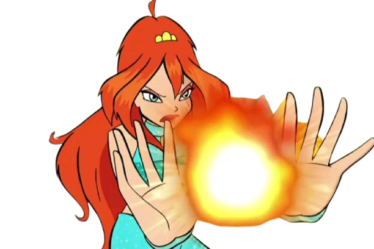
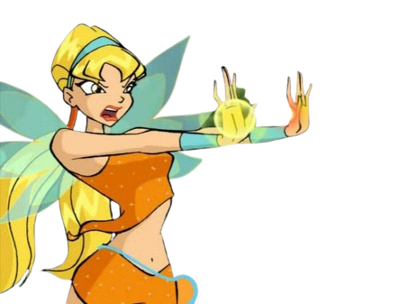
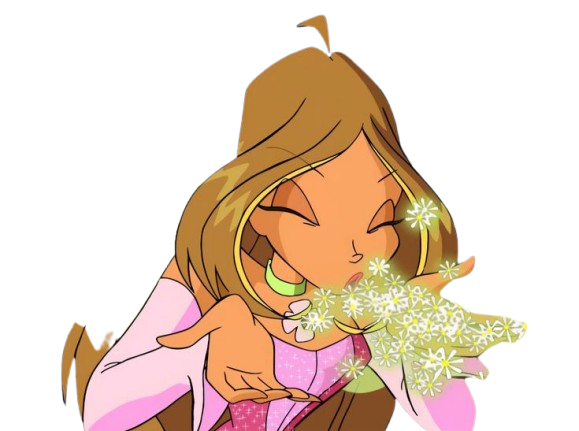
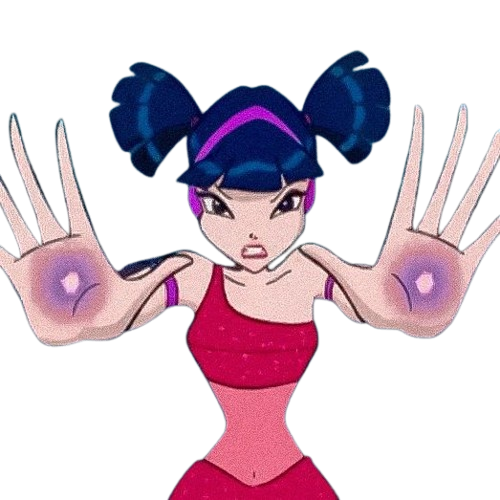
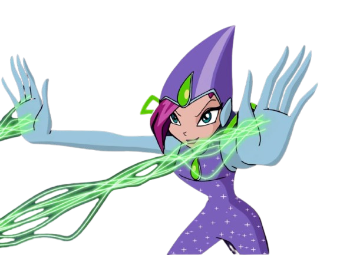
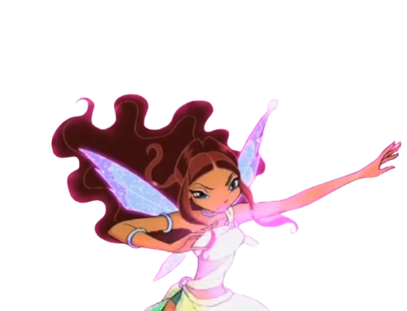

Bloom é a fada da Chama do Dragão, o poder mais forte do universo mágico. Ela controla o fogo e a energia vital, podendo lançar chamas e grandes explosões com feitiços como Dragon Flame e Fire Whip.

Stella é a fada do Sol e da Lua. Usa o poder da luz para atacar e se defender, criando feixes luminosos e escudos com feitiços como Sun Burst e Solar Flare.

Flora é a fada da Natureza. Controla plantas e flores, usando-as para prender inimigos ou curar aliados. Entre seus feitiços estão Vine Wrap e Flower Shield.

Musa é a fada da Música. Controla o som e as vibrações, podendo atacar com ondas sonoras ou curar com melodias, usando feitiços como Sonic Blast e Melody of Life.

Tecna é a fada da Tecnologia. Domina energia digital e cria campos de força e ataques cibernéticos, como Digital Shield e Data Blast.

Layla (Aisha) é a fada das Ondas. Tem poder sobre a água e o Morfix, uma substância líquida mágica que molda em várias formas. Usa feitiços como Water Tornado e Morphix Net.
💫
🫧
✨